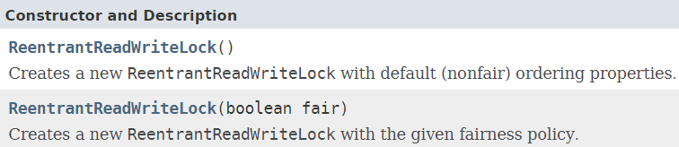
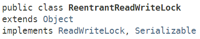
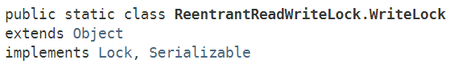

Java多线程进阶（四）—— J.U.C之locks框架：ReentrantReadWriteLock
一、ReentrantReadWriteLock类简介
ReentrantReadWriteLock类，顾名思义，是一种读写锁，它是ReadWriteLock接口的直接实现，该类在内部实现了具体独占锁特点的写锁，以及具有共享锁特点的读锁，和ReentrantLock一样，ReentrantReadWriteLock类也是通过定义内部类实现AQS框架的API来实现独占/共享的功能。
ReentrantReadWriteLock类具有如下特点：
1.1 支持公平/非公平策略
与ReadWriteLock类一样，ReentrantReadWriteLock对象在构造时，可以传入参数指定是公平锁还是非公平锁。

1.2 支持锁重入
- 同一读线程在获取了读锁后还可以获取读锁；
- 同一写线程在获取了写锁之后既可以再次获取写锁又可以获取读锁；
1.3 支持锁降级
所谓锁降级，就是：先获取写锁，然后获取读锁，最后释放写锁，这样写锁就降级成了读锁。但是，读锁不能升级到写锁。简言之，就是：
写锁可以降级成读锁，读锁不能升级成写锁。
1.4 Condition条件支持
ReentrantReadWriteLock的内部读锁类、写锁类实现了Lock接口，所以可以通过newCondition()方法获取Condition对象。但是这里要注意，读锁是没法获取Condition对象的，读锁调用newCondition()方法会直接抛出UnsupportedOperationException。
我们知道，condition的作用其实是对Object类的
wait()和notify()的增强，是为了让线程在指定对象上等待，是一种线程之间进行协调的工具。
当线程调用condition对象的await方法时，必须拿到和这个condition对象关联的锁。由于线程对读锁的访问是不受限制的（在写锁未被占用的情况下），那么即使拿到了和读锁关联的condition对象也是没有意义的，因为读线程之前不需要进行协调。
1.5 使用示例
以下是Oracle官方给出的一个例子：
使用ReentrantReadWriteLock控制对TreeMap的访问（利用读锁控制读操作的访问，利用写锁控制修改操作的访问），将TreeMap包装成一个线程安全的集合，并且利用了读写锁的特性来提高并发访问。
public class RWTreeMap {
private final Map<String, Data> m = new TreeMap<String, Data>();
private final ReentrantReadWriteLock rwl = new ReentrantReadWriteLock();
private final Lock r = rwl.readLock();
private final Lock w = rwl.writeLock();
public Data get(String key) {
r.lock();
try {
return m.get(key);
} finally {
r.unlock();
}
}
public String[] allKeys() {
r.lock();
try {
return (String[]) m.keySet().toArray();
} finally {
r.unlock();
}
}
public Data put(String key, Data value) {
w.lock();
try {
return m.put(key, value);
} finally {
w.unlock();
}
}
public void clear() {
w.lock();
try {
m.clear();
} finally {
w.unlock();
}
}
}
二、ReentrantReadWriteLock类/方法声明
2.1 类声明

内部嵌套类声明：
ReentrantReadWriteLock类有两个内部嵌套类ReadLock和WriteLock，这两个内部类的实例会在ReentrantReadWriteLock类的构造器中创建，并通过ReentrantReadWriteLock类的readLock()和writeLock()方法访问。
ReadLock：

WriteLock：

2.2 方法声明
ReentrantReadWriteLock类的核心方法其实就两个：readLock()和writeLock()，其它都是一些用来监控系统状态的方法，返回的都是某一时刻点的近似值。